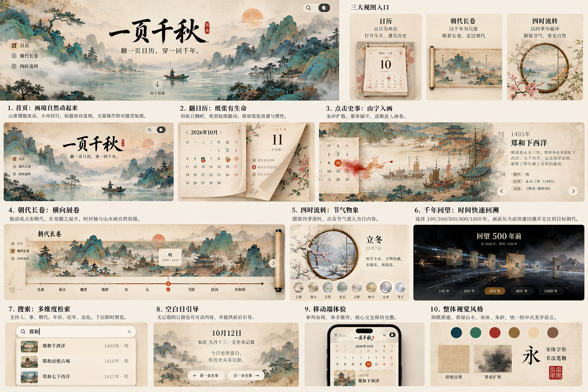

贴地：日期格、chip
一页千秋 · V2 · 设计系统复核
中央书法题字、左右夹景、纸历翻页、横向卷幅、山水圆窗、夜色回望，是最终逐屏验收的视觉锚点。总览中的编号与说明不是网站栏目。

纸是底，墨是字。以下显示当前主题的不透明纯色色对；--whisper 只做装饰。图片、透明度、纹理和混合层须在真实页面另测。
上方为原始时代装饰色；文字读取 --era-<key>-ink，按当前主题和参照面即时复算。业务脚本的旧色表尚待迁移。
一页千秋
开国大典
郑和首次下西洋
翻一页日历，穿一回千年。正文以宋体落在稳定纸面，保持自然的字距与清晰的墨色。
描述、释义、题跋：次级正文，仍保持 8.41:1。
出处 · 纪年 · 图例 长内容换行，不靠缩字号排下。
贴地：日期格、chip
抬起：历纸与纸边
悬浮：题跋、检索框
慢背景、快操作、重转场、轻反馈。点击任意一行重播。
郑和首次下西洋
永乐三年，船队自刘家港出海，经占城、爪哇至古里。
明 · 永乐三年 ·《明史·郑和传》
此日史册留白
这一天没有确切到日的记载。可以向前或向后，去最近的往事里看看。
← 上一段往事 下一段往事 →
只检查纸页与圆窗的结构。最终纸纤维、木/铜框与应季枝叶尚待制作，现有图片仅占位。
年月同字体同字号。纸角使用 3px，书脊、卷边与纸堆分别表现。
画与纸相接，正文落在清晰纸面。题跋避免通用大圆角玻璃卡。